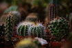
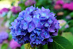

ORQUÍDEA

Orquídeas são todas as plantas que compõem a família Orchidaceae, pertencente à ordem Asparagales, uma das maiores famílias de plantas existentes. Apresentam muitíssimas e variadas formas, cores e tamanhos e existem em todos os continentes, exceto na Antártida, predominando nas áreas tropicais.
CACTO
Cactaceae é uma família botânica de arbustos, árvores, ervas, lianas e subarbustos representada pelos cactos ou catos. São aproximadamente 142 gêneros e 1793 espécies aceitas.As mudas de hortênsia podem ser cultivadas em ambiente variados uma vez que a espécie apresenta ótima adaptação à ambientes de clima ameno (12 a 21ºC).
HORTÊNCIA
Hydrangea macrophylla, conhecida pelos nomes comuns de hortênsia, novelão, hidrângea ou hidranja, é uma espécie fanerógama arbustiva pertencente ao género Hydrangea, nativa do Japão e China, mas actualmente cultivado como planta ornamental em todas as regiões temperadas e subtropicais.As mudas de hortênsia podem ser cultivadas.